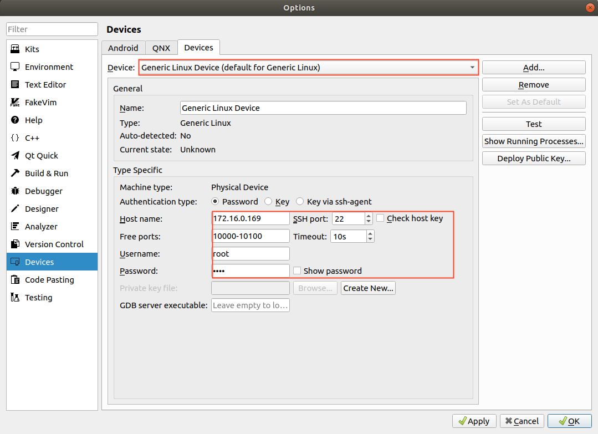
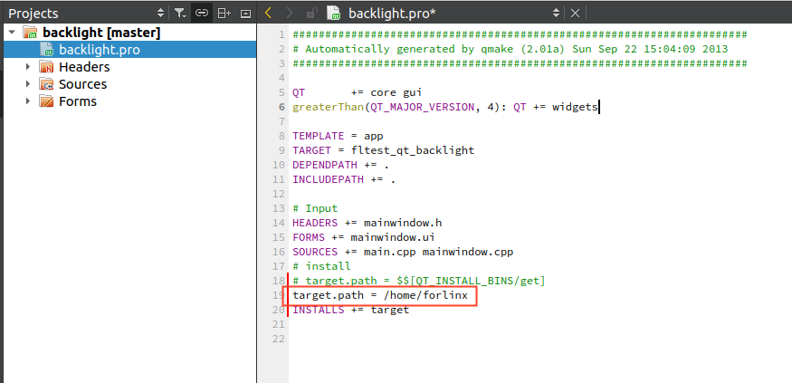
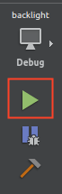

OK3568 4.19.206 Buildroot Qt-creator Remote Debug
Copyright
Document classification: □ Top secret □ Secret □ Internal information ■ Open
The copyright of this manual belongs to Baoding Folinx Embedded Technology Co., Ltd. Without the written permission of our company, no organizations or individuals have the right to copy, distribute, or reproduce any part of this manual in any form, and violators will be held legally responsible.
Forlinx adheres to copyrights of all graphics and texts used in all publications in original or license-free forms.
The drivers and utilities used for the components are subject to the copyrights of the respective manufacturers. The license conditions of the respective manufacturer are to be adhered to. Related license expenses for the operating system and applications should be calculated/declared separately by the related party or its representatives.
Revision History
Date |
Version |
Revision History |
|---|---|---|
15/09/2023 |
V1.0 |
Initial Version |
Qt-creator Remote Debug
Note: Set the virtual machine IP address and the development board IP address in the same network segment.
Virtual machine IP: 172.16.0.174
Development board IP: 172.16.0.169
Install debugging software in Ubuntu virtual machine.
sudo apt-get install gdb-multiarch
Modify the source code file.
/OK3568-linux-source/buildroot/output/OK3568/host/mkspecs/devices/linux-buildroot-g++/qmake.conf
Just comment out the variables as follows:
#QMAKE_CFLAGS_OPTIMIZE =
#QMAKE_CFLAGS_OPTIMIZE_DEBUG =
#QMAKE_CFLAGS_OPTIMIZE_FULL =
#QMAKE_CFLAGS_OPTIMIZE_SIZE =
#QMAKE_CFLAGS_DEBUG =
#QMAKE_CXXFLAGS_DEBUG =
#QMAKE_CFLAGS_RELEASE =
#QMAKE_CXXFLAGS_RELEASE =
Set development board ssh password.
Passwd: root
Enter the password “root” twice.
Add qmake.
Tools->options->Kits->Compilers->Add（The red path is configured according to the customer path）
/home/forlinx/linux-3568/OK3568-linux-source/buildroot/output/OK3568/host/bin/qmake

Add gcc.
Tools->options->Kits->Compilers->Add（The red path is configured according to the customer path）
/home/forlinx/linux-3568/OK3568-linux-source/buildroot/output/OK3568/host/bin/aarch64-linux-gcc

Add g++.
Tools->options->Kits->Compilers->Add（The red path is configured according to the customer path）
/home/forlinx/linux-3568/OK3568-linux-source/buildroot/output/OK3568/host/bin/aarch64-linux-g++

Add the gdb tool.
Tools->options->Kits->Debuggers->Add
Name: 3568
Path:/usr/bin/gdb-multiarch

Configure devices.

Configure complete test.
Note: To configure the development board and the computer virtual machine to be on the same network segment.

Host name: Development board IP address
SSH port：22
Username：root
Password：root
Then click “Test” to test the ssh communication.
The diagram indicates a successful connection.

Configure the Kit Suite.

Select the previously configured Kit Suite 3568 for the project code.

Specify the installation directory for the program on the development board: target.path = /home/forlinx

After configuration, the executable files can run on the development board.
Click the Run button:

The development board displays the following:

To enable remote debugging of the development board application, proceed with the following settings:
Remote Debugging the Application.
Close the application that was just launched on the development board.

Enter the following command on the development board to enter listening mode:
[root@ok3568:/home/forlinx]# gdbserver 172.16.0.169:2345 ./fltest_qt_backlight

On the virtual machine:
Debug->Start Debugging->Attach to Running Debug Server…


Connect to the development board service to enter debug mode.
Breakpoint Debugging Example:
Set a breakpoint in the application, then click the Step Over button repeatedly.

The development board will output breakpoint debugging information.